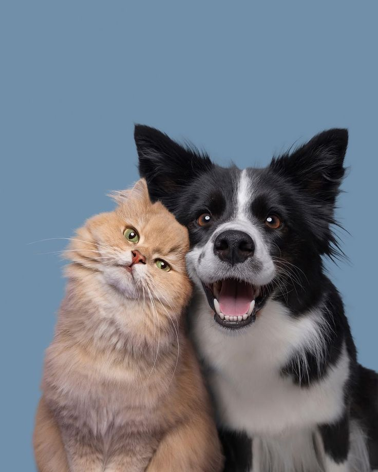

Welcome to DARG
Giving Animals a Second Chance
Domestic Animal Rescue Group (DARG) is an animal rescue organisation dedicated to caring for and finding loving homes for abandoned and neglected animals.
Find Your New Best Friend
How You Can Help
There are many ways you can make a difference in the lives of animals at DARG.
Support DARG
Your donation helps us provide food, shelter, medical care and love to animals in need.
Support Our AnimalsBecome a Volunteer
Give your time and skills to help animals in need. Join our team and make a difference in the lives of rescued cats and dogs.
Volunteer With Us